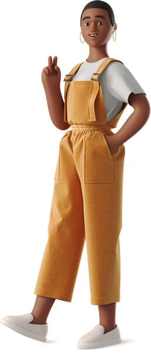
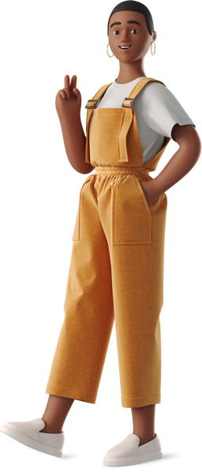

Salut 👋🏿!
Moi c'est Evetricia Kalala,
développeuse web junior
Une femme dynamique, souriante et bonne communicante, qui a osé la grande aventure de la reconversion pour exercer le métier capable de satisfaire sa curiosité, sa soif d'apprendre et libérer sa créativité : Celui de web developper.
Ce que j'aime, c'est coder des sites "from "scratch";
Les faire naitre et grandir.
Rigoureuse et attachée à la qualité de mes développements, je mettrais un point d'honneur à vous donner entière satisfaction en développant la solution web répondant à vos besoins.
N'hésitez pas à me confier vos plus beaux projets.
Au plaisir de travailler "avec vous".
Evetricia KALALA
Mon parcours
Un profil un peu... atypique !
Curriculum vitae
C’est après 5 ans dans le prêt-à-porter que j’ai saisis l’opportunité de me reconvertir dans le développement web.
 

Accompagnée de toute ma conviction et de ma détermination, je candidate chez Openclassrooms afin d'acquérir les compétences indispensables à mon futur métier.
Après 8 mois de formation à distance, je suis fière d'avoir obtenu mon bac+2 de Développeur web.